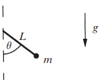

In elementary courses, the pendulum’s essential nonlinearity is sidestepped by the small-angle approximation \( \sin \theta \approx \theta \)
In the absence of damping and external driving, the motion of a pendulum is governed by \[ \frac{d^2 \theta}{dt^2} + \frac{g}{L} \sin \theta = 0 \] where \( \theta \) is the angle from the downward vertical, \( g \) is the acceleration due to gravity, and \( L \) is the length of the pendulum.
Nondimensionalize it by introducing a frequency \(\omega = \sqrt{g/L}\) and a dimensionless time \( \tau = \omega t \). Then the equation becomes \[ \ddot{\theta} + \sin \theta = 0 \] where the overdot denotes differentiation with respect to \( \tau \). The corresponding system in the phase plane is \[ \dot{\theta} = v \] \[ \dot{v} = -\sin \theta \] where \( v \) is the (dimensionless) angular velocity
1Strogatz, S.H. (2015). Nonlinear Dynamics and Chaos: With Applications to Physics, Biology, Chemistry, and Engineering (2nd ed.). CRC Press.